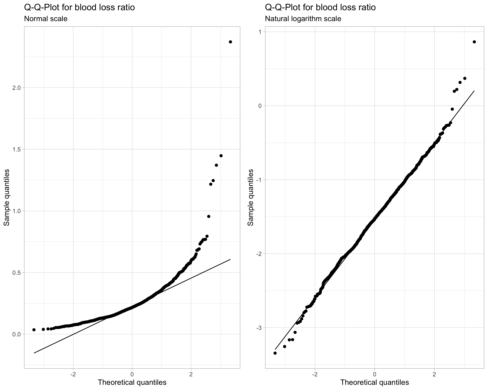
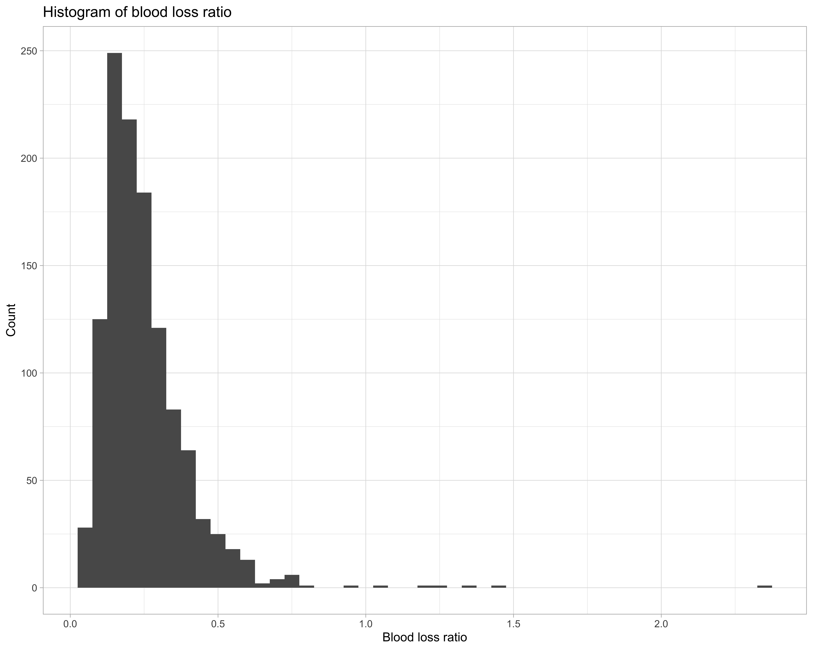
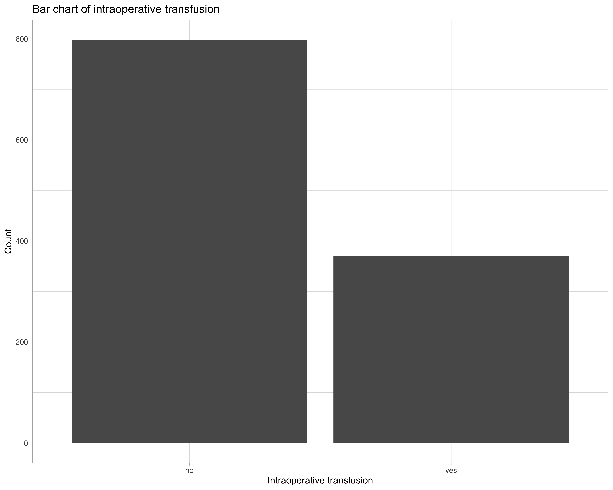
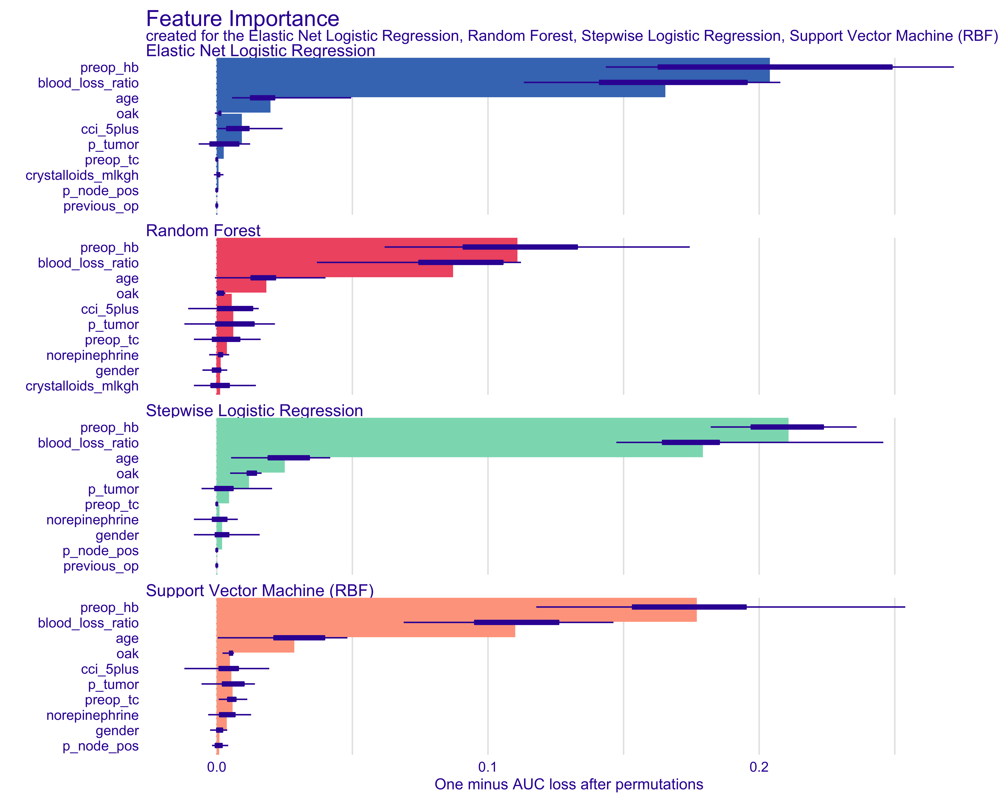
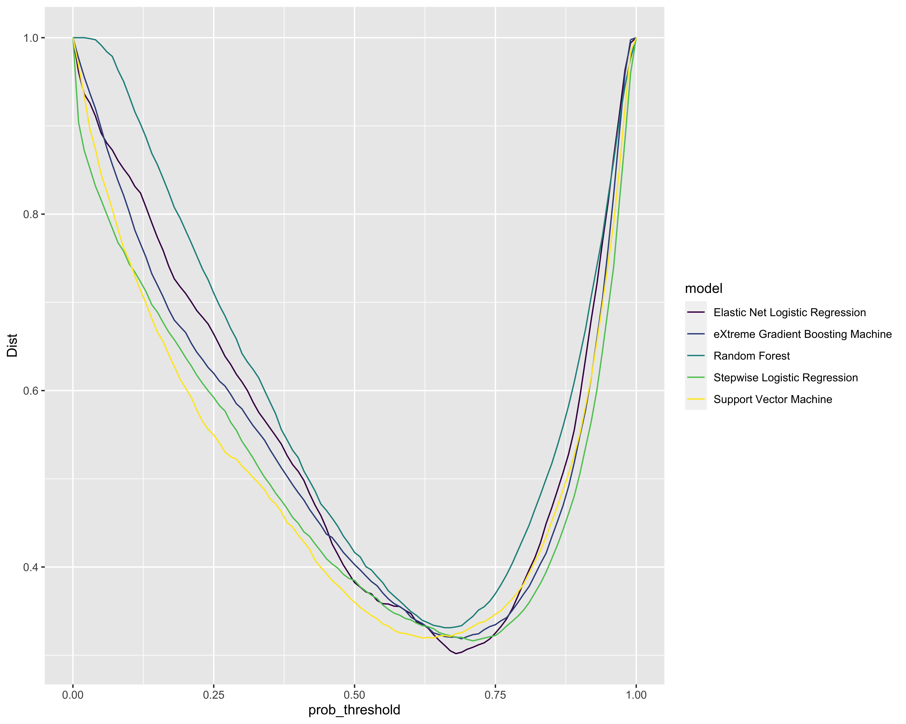
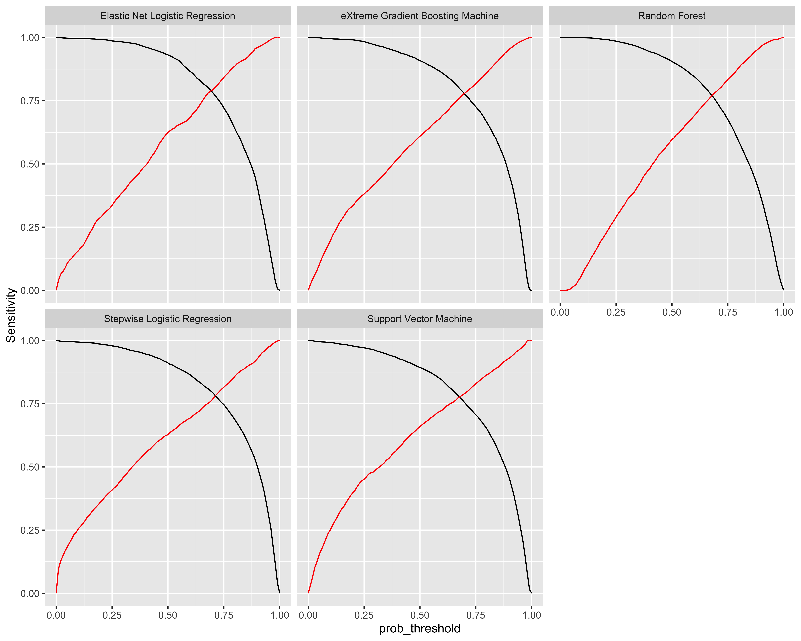

3 Results
3.1 Data plots

3.2 Model outputs
3.2.1 Models with intraoperative transfusion as response
3.2.1.1 Stepwise Logistic Regression
#> Preparation of a new explainer is initiated
#> -> model label : Stepwise Logistic Regression
#> -> data : 232 rows 16 cols
#> -> data : tibbble converted into a data.frame
#> -> target variable : 232 values
#> -> model_info : package caret , ver. 6.0.86 , task Classification ( [33m default [39m )
#> -> predict function : p_fun
#> -> predicted values : numerical, min = 2.451748e-09 , mean = 0.6792731 , max = 0.9976849
#> -> residual function : difference between y and yhat ( [33m default [39m )
#> -> residuals : numerical, min = -0.9657602 , mean = 0.006071775 , max = 0.9759638
#> [32m A new explainer has been created! [39m3.2.1.2 Random Forest
#> Preparation of a new explainer is initiated
#> -> model label : Random Forest
#> -> data : 232 rows 16 cols
#> -> data : tibbble converted into a data.frame
#> -> target variable : 232 values
#> -> model_info : package caret , ver. 6.0.86 , task Classification ( [33m default [39m )
#> -> predict function : p_fun
#> -> predicted values : numerical, min = 0.05988024 , mean = 0.6827466 , max = 0.998004
#> -> residual function : difference between y and yhat ( [33m default [39m )
#> -> residuals : numerical, min = -0.9640719 , mean = 0.002598252 , max = 0.7964072
#> [32m A new explainer has been created! [39m3.2.1.3 Elastic Net Logistic Regression
#> Preparation of a new explainer is initiated
#> -> model label : Elastic Net Logistic Regression
#> -> data : 232 rows 16 cols
#> -> data : tibbble converted into a data.frame
#> -> target variable : 232 values
#> -> model_info : package caret , ver. 6.0.86 , task Classification ( [33m default [39m )
#> -> predict function : p_fun
#> -> predicted values : numerical, min = 0.001055632 , mean = 0.6800444 , max = 0.9932827
#> -> residual function : difference between y and yhat ( [33m default [39m )
#> -> residuals : numerical, min = -0.9467891 , mean = 0.005300419 , max = 0.9005678
#> [32m A new explainer has been created! [39m3.2.1.4 Support Vector Machine (RBF)
#> Preparation of a new explainer is initiated
#> -> model label : Support Vector Machine
#> -> data : 232 rows 16 cols
#> -> data : tibbble converted into a data.frame
#> -> target variable : 232 values
#> -> model_info : package caret , ver. 6.0.86 , task Classification ( [33m default [39m )
#> -> predict function : p_fun
#> -> predicted values : numerical, min = 0.007661298 , mean = 0.671636 , max = 0.9909579
#> -> residual function : difference between y and yhat ( [33m default [39m )
#> -> residuals : numerical, min = -0.9854138 , mean = 0.01370881 , max = 0.9398494
#> [32m A new explainer has been created! [39m3.2.1.5 Model performance
| Model | Recall | Precision | F1 | Accuracy | AUC |
|---|---|---|---|---|---|
| Stepwise Logistic Regression | 0.918 | 0.825 | 0.869 | 0.810 | 0.840 |
| Elastic Net Logistic Regression | 0.925 | 0.826 | 0.872 | 0.815 | 0.836 |
| Support Vector Machine | 0.881 | 0.838 | 0.859 | 0.802 | 0.832 |
| Random Forest | 0.925 | 0.817 | 0.867 | 0.806 | 0.822 |
3.2.1.6 Feature importance

3.2.1.7 Optimal cutpoint
| Model | Threshold | Sensitivity | Specificity | Balanced Accuracy | Youdens J | Distance |
|---|---|---|---|---|---|---|
| Elastic Net Logistic Regression | 0.33 | 0.797 | 0.814 | 0.805 | 0.611 | 0.282 |
| Stepwise Logistic Regression | 0.29 | 0.800 | 0.788 | 0.794 | 0.588 | 0.298 |
| Support Vector Machine | 0.34 | 0.774 | 0.810 | 0.792 | 0.584 | 0.302 |
| Random Forest | 0.34 | 0.770 | 0.791 | 0.780 | 0.561 | 0.316 |
Cutpoint by distance to optimal model (sensitivity and specificity = 1)

Cutpoint by sensitivity and specificity
